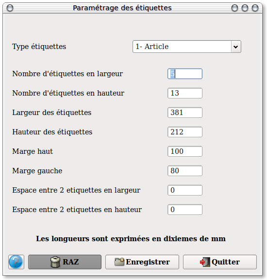

~ Comptabilité et Facturation Laurux ~

~ Comptabilité et Facturation Laurux ~ |
|
|
|

En premier il faut séléctionner le type d'étiquettes à paramétrer à l'aide du combobox "Type étiquettes" puis il faut remplir chaque zone en veillant à bien saisir des dixiemes de mm.
Exemple de format d' étiquettes produits.
Dimensions
des étiquettes: 48,5 mm x 25,4 mm - Nombre d'étiquettes
horizontalement : 4 (Marge gauche: 8 mm)
Nombre d'étiquettes verticalement : 10
(Marge du haut: 21,5 mm )
Exemple de format d' étiquettes de gondole et clients.
Dimensions
des étiquettes: 100,5 mm x 37 mm - Nombre d'étiquettes
horizontalement : 2 (Marge gauche: 0 mm)
Nombre d'étiquettes verticalement : 8
(Marge du haut: 0 mm )
Il faudra saisir les valeurs en dixiemes de mm (voir l'exemple au-dessus). N' oubliez pas d'enregistrer votre travail avant de changer de type d'étiquettes ou de sortir.
Le bouton "RAZ" vous permet de remettre à blanc toutes les zones.
----------------------------------------------------------------------------------------------------------------------